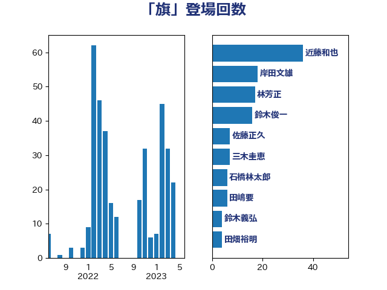

単語「旗」

| 近藤和也 | 立憲民主党 | 36 回 |
| 岸田文雄 | 自由民主党 | 18 回 |
| 林芳正 | 自由民主党 | 17 回 |
| 鈴木俊一 | 自由民主党 | 16 回 |
| 佐藤正久 | 自由民主党 | 7 回 |
| 三木圭恵 | 日本維新の会 | 7 回 |
| 石橋林太郎 | 自由民主党 | 6 回 |
| 田嶋要 | 立憲民主党 | 6 回 |
| 鈴木義弘 | 国民民主党 | 4 回 |
| 田畑裕明 | 自由民主党 | 4 回 |
| 渡辺周 | 立憲民主党 | 4 回 |
| 岡田直樹 | 自由民主党 | 4 回 |
| 高市早苗 | 自由民主党 | 3 回 |
| 野村哲郎 | 自由民主党 | 3 回 |
| 足立康史 | 日本維新の会 | 3 回 |
| 西村明宏 | 自由民主党 | 3 回 |
| 萩生田光一 | 自由民主党 | 3 回 |
| 緒方林太郎 | 無所属 | 3 回 |
| 笠井亮 | 日本共産党 | 3 回 |
| 後藤茂之 | 自由民主党 | 3 回 |
| 山本剛正 | 日本維新の会 | 3 回 |
| 宮本徹 | 日本共産党 | 3 回 |
| 守島正 | 日本維新の会 | 3 回 |
| 奥下剛光 | 日本維新の会 | 3 回 |
| 太田房江 | 自由民主党 | 3 回 |
| 仁木博文 | 無所属 | 3 回 |
| 三宅伸吾 | 自由民主党 | 3 回 |
| 高村正大 | 自由民主党 | 2 回 |
| 野田佳彦 | 立憲民主党 | 2 回 |
| 落合貴之 | 立憲民主党 | 2 回 |
| 菅義偉 | 自由民主党 | 2 回 |
| 若宮健嗣 | 自由民主党 | 2 回 |
| 舩後靖彦 | れいわ新選組 | 2 回 |
| 篠原孝 | 立憲民主党 | 2 回 |
| 神谷宗幣 | 参政党 | 2 回 |
| 田村智子 | 日本共産党 | 2 回 |
| 浜田靖一 | 自由民主党 | 2 回 |
| 河野義博 | 公明党 | 2 回 |
| 柳ヶ瀬裕文 | 日本維新の会 | 2 回 |
| 松原仁 | 立憲民主党 | 2 回 |
| 朝日健太郎 | 自由民主党 | 2 回 |
| 斉藤鉄夫 | 公明党 | 2 回 |
| 掘井健智 | 日本維新の会 | 2 回 |
| 山際大志郎 | 自由民主党 | 2 回 |
| 山本博司 | 公明党 | 2 回 |
| 小野泰輔 | 日本維新の会 | 2 回 |
| 小西洋之 | 立憲民主党 | 2 回 |
| 寺田学 | 立憲民主党 | 2 回 |
| 安江伸夫 | 公明党 | 2 回 |
| 塩村あやか | 立憲民主党 | 2 回 |
| 吉良州司 | 無所属 | 2 回 |
| 吉田宣弘 | 公明党 | 2 回 |
| 勝部賢志 | 立憲民主党 | 2 回 |
| 八木哲也 | 自由民主党 | 2 回 |
| 伴野豊 | 立憲民主党 | 2 回 |
| 伊東信久 | 日本維新の会 | 2 回 |
| 中野洋昌 | 公明党 | 2 回 |
| 中川宏昌 | 公明党 | 2 回 |
| 中司宏 | 日本維新の会 | 2 回 |
| ながえ孝子 | 無所属 | 2 回 |
| 鬼木誠 | 立憲民主党 | 1 回 |
| 馬場雄基 | 立憲民主党 | 1 回 |
| 音喜多駿 | 日本維新の会 | 1 回 |
| 阿部弘樹 | 日本維新の会 | 1 回 |
| 鈴木宗男 | 日本維新の会 | 1 回 |
| 金村龍那 | 日本維新の会 | 1 回 |
| 重徳和彦 | 立憲民主党 | 1 回 |
| 道下大樹 | 立憲民主党 | 1 回 |
| 進藤金日子 | 自由民主党 | 1 回 |
| 西村智奈美 | 立憲民主党 | 1 回 |
| 西村康稔 | 自由民主党 | 1 回 |
| 藤田文武 | 日本維新の会 | 1 回 |
| 荒井優 | 立憲民主党 | 1 回 |
| 羽生田俊 | 自由民主党 | 1 回 |
| 穀田恵二 | 日本共産党 | 1 回 |
| 稲田朋美 | 自由民主党 | 1 回 |
| 秋野公造 | 公明党 | 1 回 |
| 福島伸享 | 無所属 | 1 回 |
| 福島みずほ | 社会民主党 | 1 回 |
| 福山哲郎 | 立憲民主党 | 1 回 |
| 神谷裕 | 立憲民主党 | 1 回 |
| 田名部匡代 | 立憲民主党 | 1 回 |
| 猪瀬直樹 | 日本維新の会 | 1 回 |
| 浜田聡 | NHK党 | 1 回 |
| 浜口誠 | 国民民主党 | 1 回 |
| 河西宏一 | 公明党 | 1 回 |
| 永岡桂子 | 自由民主党 | 1 回 |
| 永井学 | 自由民主党 | 1 回 |
| 櫛渕万里 | れいわ新選組 | 1 回 |
| 横山信一 | 公明党 | 1 回 |
| 新妻秀規 | 公明党 | 1 回 |
| 斎藤アレックス | 国民民主党 | 1 回 |
| 打越さく良 | 立憲民主党 | 1 回 |
| 手塚仁雄 | 立憲民主党 | 1 回 |
| 徳永エリ | 立憲民主党 | 1 回 |
| 庄子賢一 | 公明党 | 1 回 |
| 平林晃 | 公明党 | 1 回 |
| 市村浩一郎 | 日本維新の会 | 1 回 |
| 川崎ひでと | 自由民主党 | 1 回 |
| 島尻安伊子 | 自由民主党 | 1 回 |
| 岡本三成 | 公明党 | 1 回 |
| 岡本あき子 | 立憲民主党 | 1 回 |
| 山添拓 | 日本共産党 | 1 回 |
| 山口晋 | 自由民主党 | 1 回 |
| 山下雄平 | 自由民主党 | 1 回 |
| 小野田紀美 | 自由民主党 | 1 回 |
| 小田原潔 | 自由民主党 | 1 回 |
| 小林鷹之 | 自由民主党 | 1 回 |
| 寺田静 | 無所属 | 1 回 |
| 宮本岳志 | 日本共産党 | 1 回 |
| 宗清皇一 | 自由民主党 | 1 回 |
| 奥野総一郎 | 立憲民主党 | 1 回 |
| 大石あきこ | れいわ新選組 | 1 回 |
| 大島九州男 | れいわ新選組 | 1 回 |
| 大家敏志 | 自由民主党 | 1 回 |
| 土屋品子 | 自由民主党 | 1 回 |
| 國重徹 | 公明党 | 1 回 |
| 国定勇人 | 自由民主党 | 1 回 |
| 嘉田由紀子 | 無所属 | 1 回 |
| 吉田統彦 | 立憲民主党 | 1 回 |
| 吉田とも代 | 日本維新の会 | 1 回 |
| 古賀友一郎 | 自由民主党 | 1 回 |
| 古川元久 | 国民民主党 | 1 回 |
| 北神圭朗 | 無所属 | 1 回 |
| 倉林明子 | 日本共産党 | 1 回 |
| 伊藤渉 | 公明党 | 1 回 |
| 伊佐進一 | 公明党 | 1 回 |
| 中谷真一 | 自由民主党 | 1 回 |
| 中村裕之 | 自由民主党 | 1 回 |
| 下条みつ | 立憲民主党 | 1 回 |
| 上杉謙太郎 | 自由民主党 | 1 回 |